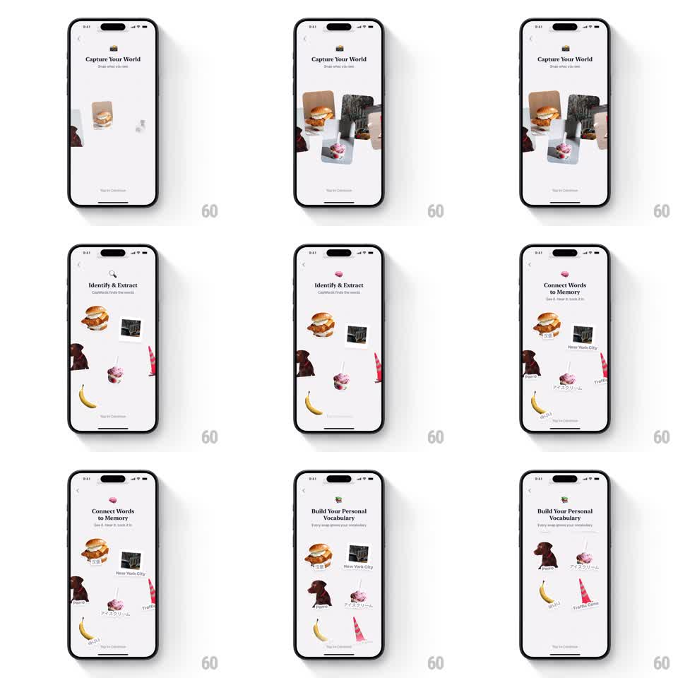

Media
Frame-by-frame

Rebuild this interaction 1:1: CapWords' four-step onboarding - photo cutouts (burger, dog, ice cream, banana, traffic cone, city) assemble into a loose collage that rearranges as each step's headline cycles ("Capture Your World", "Identify & Extract", "Connect Words to Memory", "Build Your Personal Vocabulary"), with word labels attaching to the cutouts in the memory step.

Rebuild this interaction 1:1: CapWords' four-step onboarding - photo cutouts (burger, dog, ice cream, banana, traffic cone, city) assemble into a loose collage that rearranges as each step's headline cycles ("Capture Your World", "Identify & Extract", "Connect Words to Memory", "Build Your Personal Vocabulary"), with word labels attaching to the cutouts in the memory step.
## Integration
Integration: stack-agnostic spec - springs given as stiffness/damping, timed motions as duration + curve; map every value to your framework and animation library of choice.
## Scene
White onboarding screens with a back chevron and "Tap to Continue" at the bottom. Step 1: "Capture Your World" with photo cutouts scattered mid-screen. Step 2: "Identify & Extract" - cutouts rearranged. Step 3: "Connect Words to Memory" - each cutout gains a label (New York City, Perro, Banana, Traffic Cone, Japanese words). Step 4: "Build Your Personal Vocabulary" - a two-column grid of labeled cutouts.
## Motion spec
Pattern: step-cycled collage with morphing cutout layout and staggered labels.
- Step entry: cutouts fly in from off-screen edges (translate 80pt -> rest, spring ~280/18, 60ms stagger) at slight random rotations (+/-6deg).
- Step transition: headline crossfades (250ms) while the cutouts travel to their new layout positions (400ms ease-in-out, each on its own slight arc).
- Step 3: labels pop in under each cutout (scale 0.6 -> 1, spring ~320/16, 80ms stagger) in mixed languages.
- Step 4: the collage snaps into the tidy grid (350ms ease-in-out), rotations settling to 0.
- "Tap to Continue" pulses softly (opacity 0.6 -> 1, 1.5s) throughout.
## Calibration
- Cutouts are paper-like photos with white borders and drop shadows - they should feel placed, not rendered.
- Each transition keeps at least two cutouts on screen the whole time - continuity matters.
## Reduced motion
Steps crossfade; cutouts appear in their new layout without travel.
## Don't miss
- Labels include non-English words - the multilingual mix is the product's point.
- The final grid is orderly after the playful scatter - a clear before/after.